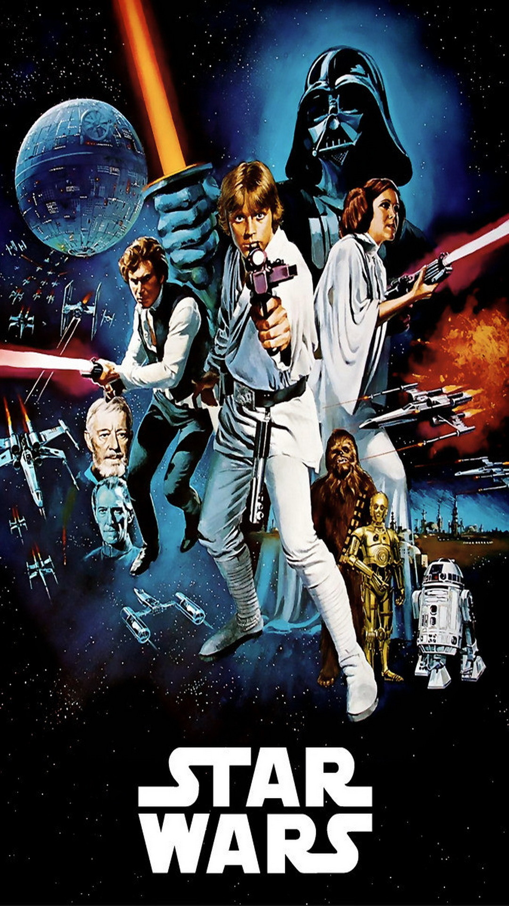

Star Wars throughout the years has told some great stories through their movies. On this website, I hope to explain why these are my favorites. Some of my favorite movies include:
- A New Hope
- Rogue One
- The Empire Strikes Back
A New Hope
This is the very first Star Wars movie. I will always love this movie as the story it tells is unmatchable. While it is true that the visuals are very outdated, I can still sit down at any point and just enjoy this movie for what it is.
Rogue One
This movie is a newer one, but goodness gracious it tells an incredible story. Visually stunning, action-packed, and filled with emotion the whole way through, I adore this movie.
The Empire Strikes Back
As the second Star Wars movie released, this movie absolutely holds up to the standards of the original. The story and quality of visuals done in this movie are improved on the first, and it makes for an absolutely awesome watchthrough.